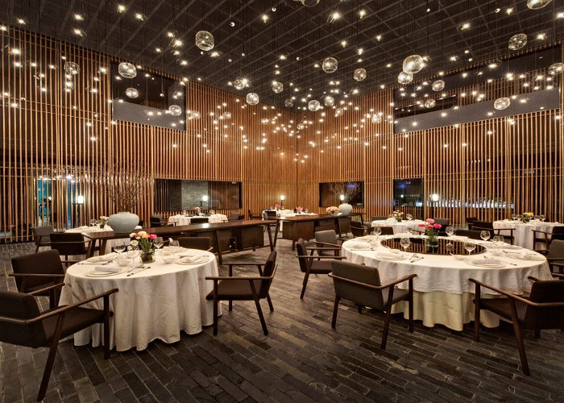

About as
A true hidden gem in Kensington, Launceston Place serves a flamboyant and seasonally-inspired modern European menu.
Awarded three AA Rosettes in 2019, Launceston Place also won AA’s ‘Notable Wine List’ title in 2013 – one of only seven restaurants in to receive the accolade in the UK that year as well as being awarded ‘Best Wine List’ at the Tatler Restaurant Awards.
Our award winning team includes Head Chef Ben Murphy, who was named Chef to Watch 2016 by The Good Food Guide and took home the Breakthrough Chef of the Year gong at the Food & Travel Awards. Head Sommelier Maciej Lyko has two year’s experience in the restaurant and holds the Advanced Court of Master Sommeliers Certificate.